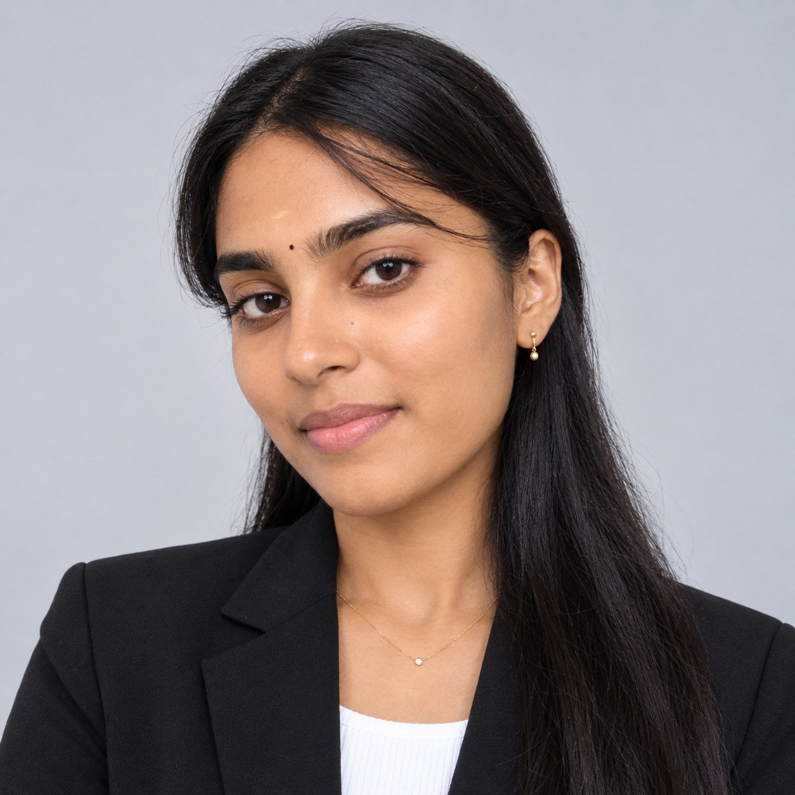

Education
B.E. Computer Science
& Engineering (IoT)
CGPA: 8.5 / 10
Currently pursuing

COMPUTER ENGINEERING · IoTA little about me
I’m Subhashini, a Computer Science and Engineering student specializing in the Internet of Things (IoT), with skills in the MERN stack and embedded systems.
Through internships and projects, I have gained experience developing software applications and integrating hardware with IoT technologies. I’m interested in building reliable, practical solutions that address real-world needs.
Education
CGPA: 8.5 / 10
Currently pursuing
Technical toolkit
JavaScript
Python
C
React.js · React 18
HTML5 · CSS3
Node.js · Express.js
REST API design
TensorFlow · PyTorch
Pandas · NumPy
Tableau
MySQL · MongoDB
GitHub · Postman
VS Code
Achievements
Active participation in the annual Sports Day, reflecting teamwork, discipline, and a healthy campus spirit.
Developed a smart healthcare monitoring concept focused on connected systems and decision support in practical applications.
Explored an IoT-based safety and monitoring patent idea designed to improve real-time awareness in connected environments.